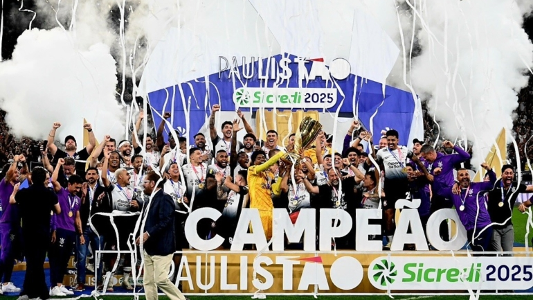

1º de setembro de 1910, um grupo de cinco operários do bairro do Bom Retiro, em São Paulo, se reuniu para fundar um time de futebol que representasse a classe trabalhadora. Anselmo Correa, Antônio Pereira, Carlos Silva, Joaquim Ambrósio e Raphael Perrone, inspirados no time inglês Corinthian-Casuals, decidiram criar o Sport Club Corinthians Paulista. Com uma bola emprestada e muita determinação, o clube cresceu e se tornou um dos maiores do Brasil, conquistando milhões de torcedores ao longo dos anos.
O Sport Club Corinthians Paulista é um dos clubes mais vitoriosos do futebol brasileiro. Ao longo de sua história, o Timão conquistou inúmeros títulos, incluindo 7 Campeonatos Brasileiros, 3 Copas do Brasil e 30 Campeonatos Paulistas. No cenário internacional, brilhou ao vencer a Copa Libertadores da América em 2012 e se tornar Bicampeão Mundial, com títulos em 2000 e 2012. Com uma trajetória repleta de glórias, o Corinthians segue escrevendo sua história com raça e paixão.
Em 2025, o Corinthians conquistou mais um título histórico ao vencer o Campeonato Paulista sobre seu maior rival, o Palmeiras.A vitória consolidou o Corinthians como o maior campeão estadual e reforçou a mística do clube em decisões. Mais uma vez, a Fiel Torcida fez a diferença, empurrando o time rumo à glória!
